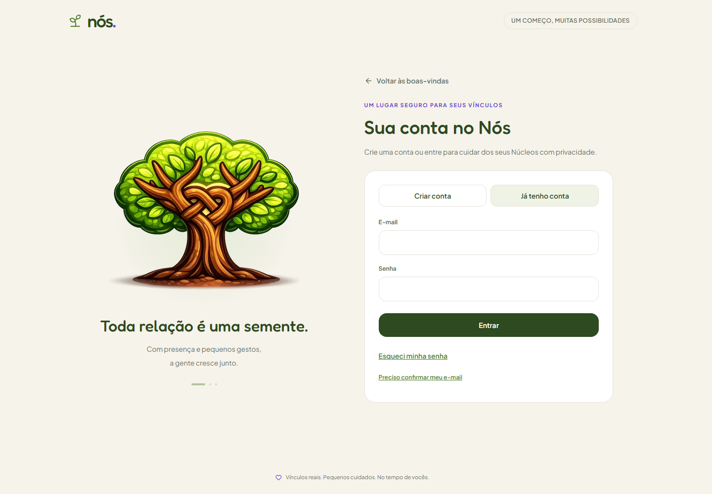
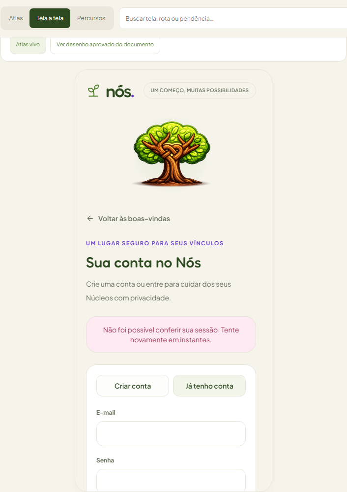
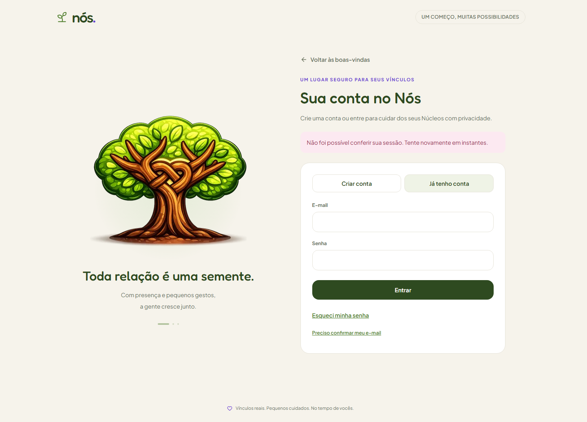
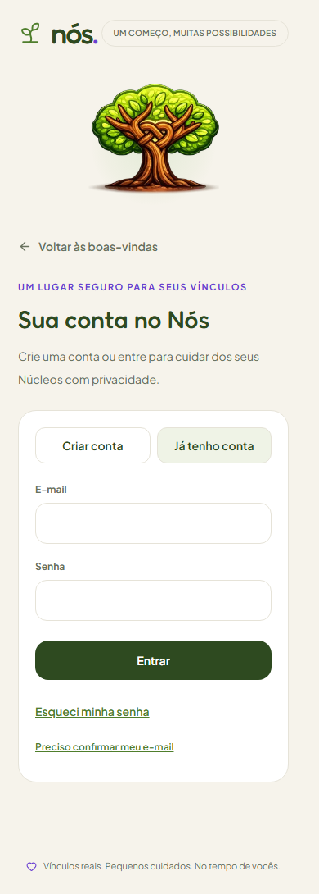
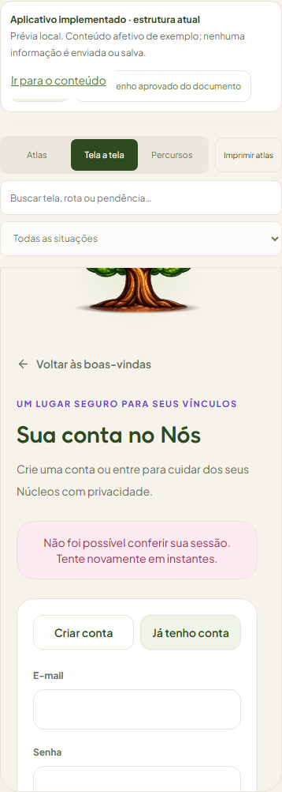
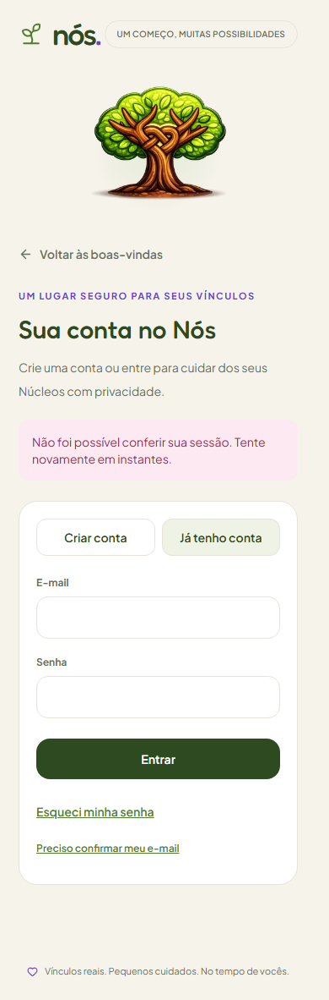

v0.14.1 — 13/10/2026 — Conta: sessão indisponível
A mesma URL com erro=servico é aberta antes/depois. Antes o motivo era ignorado; depois há aviso específico, com login e retorno ao convite preservados. A captura demonstra apresentação; não simula falha de rede real. O Atlas representa o estado Erro da Tela 01.
Computador
Antes: sem aviso
Atlas: aviso de sessão
Depois: aviso de sessão
Celular
Antes: sem aviso
Atlas: aviso de sessão
Depois: aviso de sessão
Envio Gmail e recebimento externo permanecem pendentes. MVP vivo